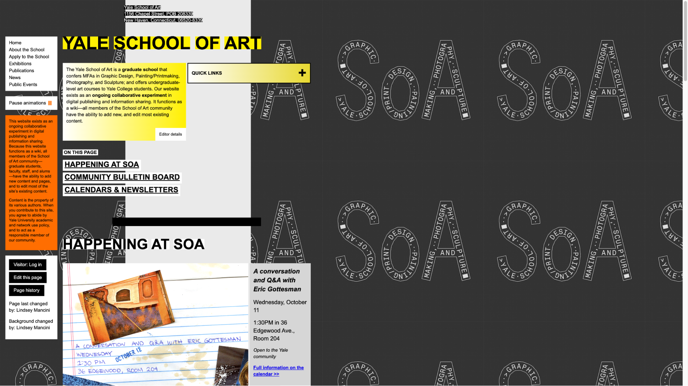
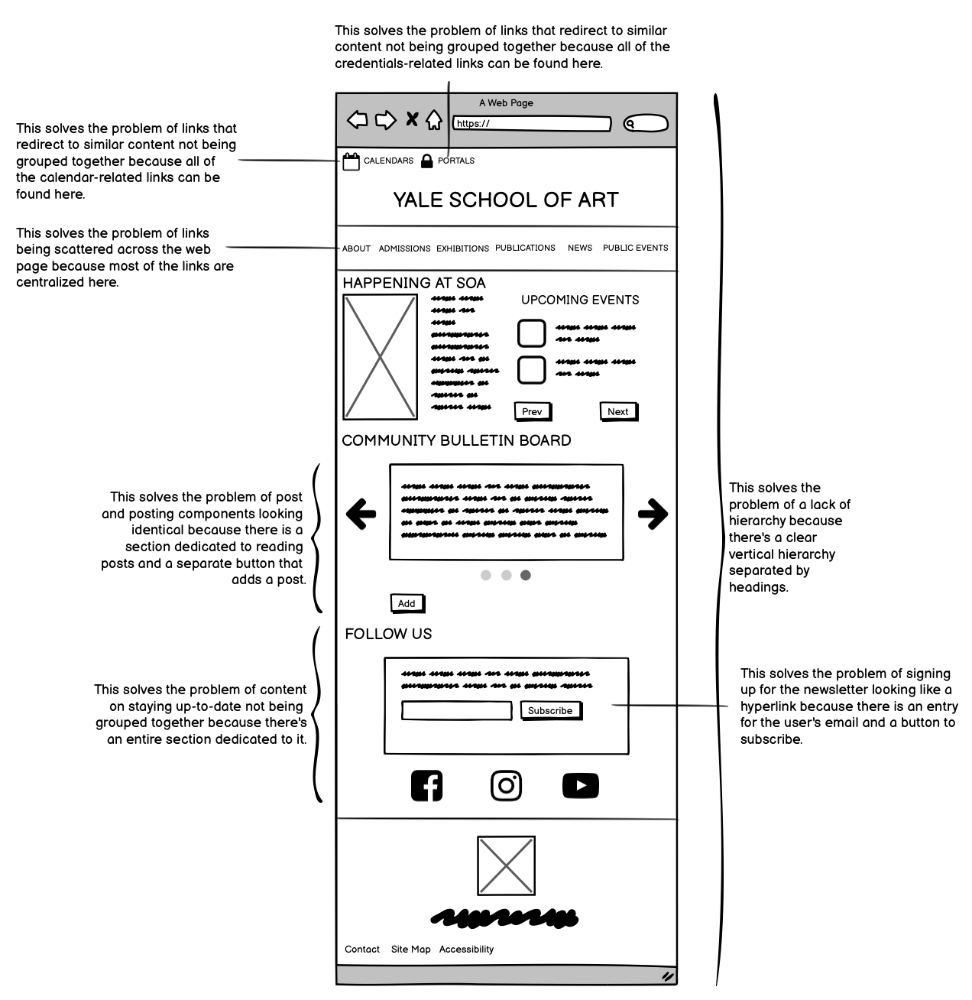
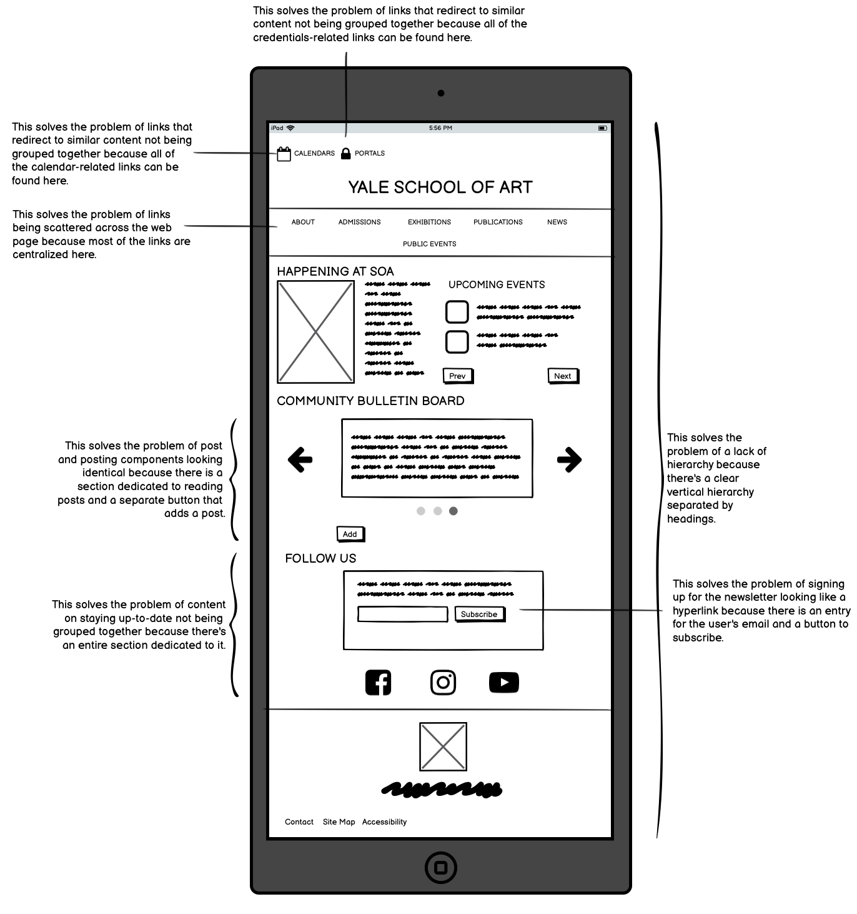
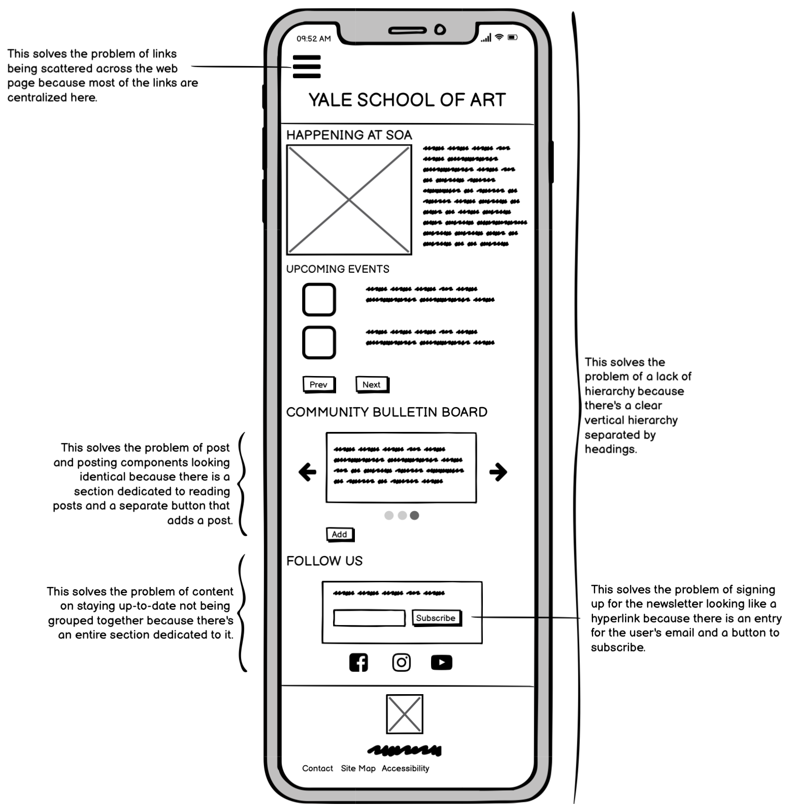
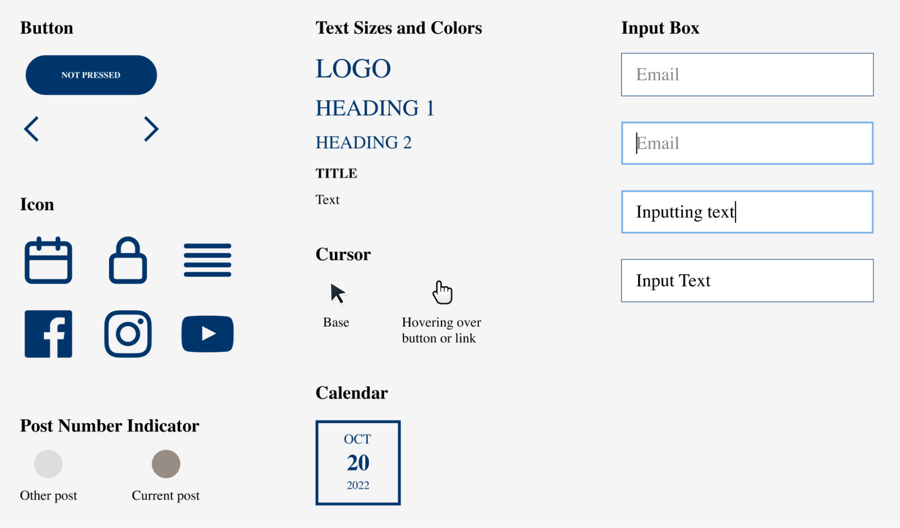
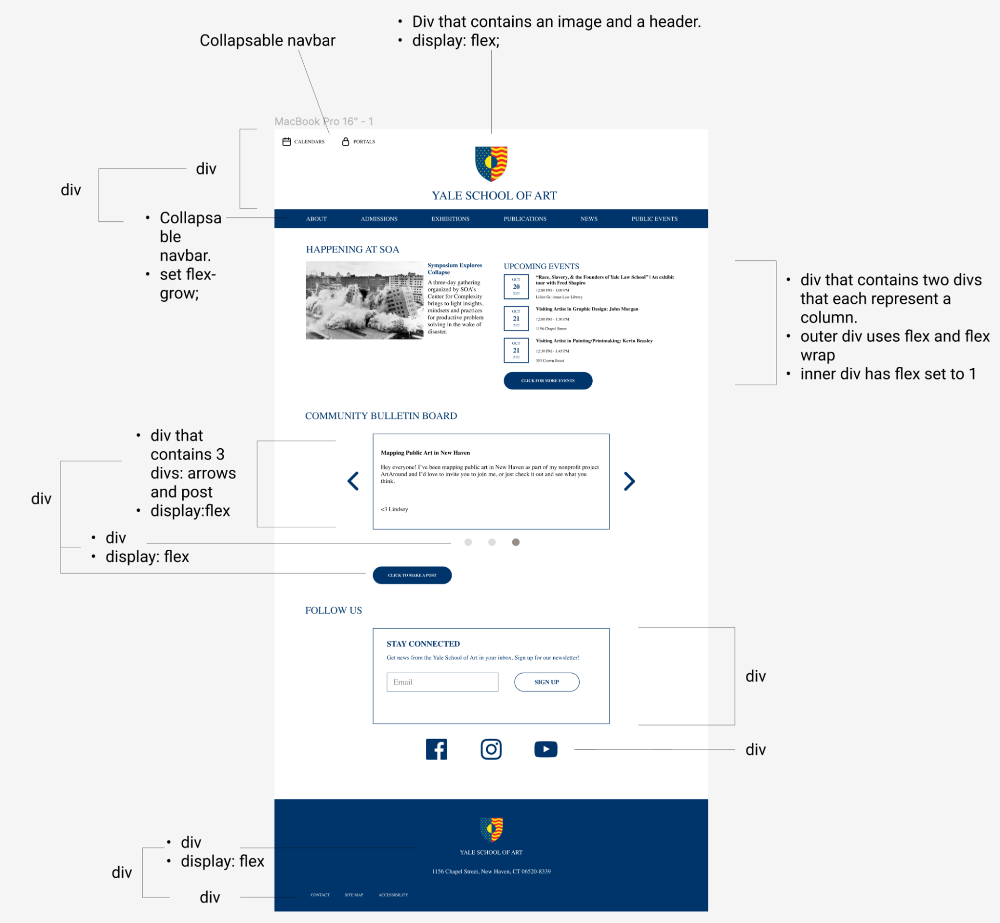
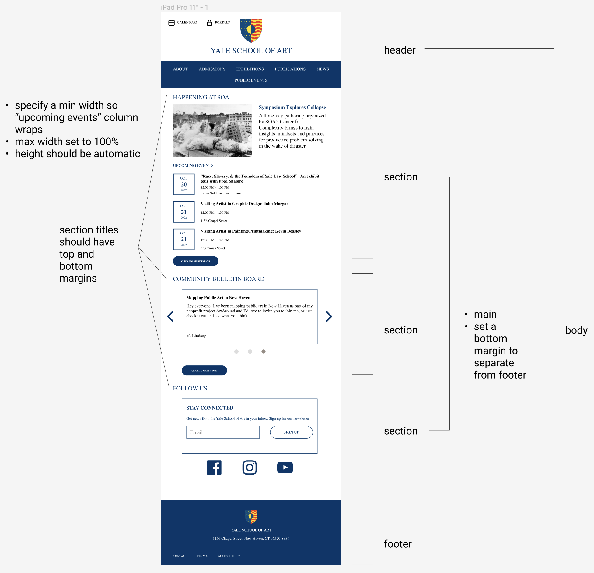
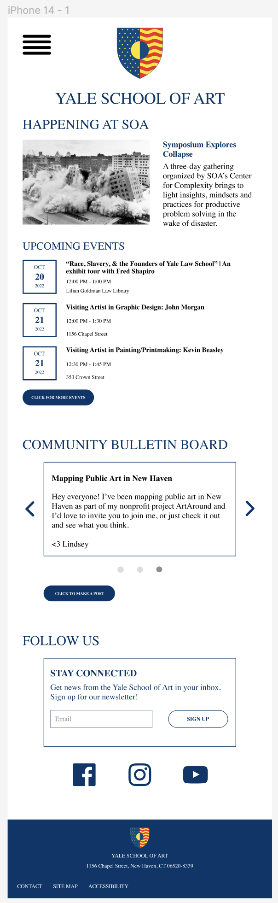

Responsive Redesign
Overview
The goal of this assignment was to practice the workflow of redesigning a website. I identified flaws in an existing interface, created low-fidelity and high-fidelity prototypes for various screen sizes, then built a responsive website based on those prototypes.
Part 1: Identifying Usability Problems
Picking a Web Page
I chose to analyze the home page of Yale School of Art based on usability and accessibility standards. I chose this website because it made me feel overwhelmed. Below is a screenshot of the website, which is linked here:
Finding Problems
I identified usability problems of the web page based on 4 criteria: learnability, memorability, efficiency, and its conceptual model. For each problem, I elaborated on which criteria it affects.
- There is no clear hierarchy. Learnability
- Links are scattered across the web page, and links that redirect to similar content are not grouped together. Memorability
- Under the “Community Bulletin Board” section, post and posting components look identical. Efficiency
- Content on staying up-to-date is not grouped together. Memorability
- Signing up for the newsletter looks like another hyperlink. Efficiency
The lack of hierarchy makes it difficult for the user to determine where to direct their attention.
MemorabilityThe lack of hierarchy encourages the user to look at components in a different order every time they visit the web page. Without a routine, it’s difficult to recall what to do.
EfficiencyThe lack of hierarchy forces the user to randomly search the web page to carry out their tasks.
Conceptual ModelThe lack of hierarchy provides no guidance to the user for how to navigate the web page.
The lack of organization makes it difficult to remember where a particular link is located.
It takes some time to distinguish the component that adds a post from the existing posts.
Conceptual ModelThe similarity of the post and posting components doesn’t let the user know that they’re different.
The lack of organization makes it difficult to remember where to go to subscribe or follow.
It takes some time to find where to sign up for the newsletter.
Accessibility
This web page provides significant accessibility. All of the images have alt tags and all of the elements have ARIA labels. WebAIM WAVE detected no errors but provided alerts regarding redundant links or bolded words that weren’t set as heading elements. I don’t think these are huge concerns, so I agree with WebAIM WAVE marking these as alerts rather than errors.
Part 2: Visual Redesign
I created low-fidelity wireframes, a visual design style guide, and high-fidelity prototypes based on the usability problems that I identified in Part 1.
Low-fidelity Wireframing
I created 3 wireframes—one for mobile, tablet, and desktop screens—that address the usability problems that I identified and described how they address them.
Desktop
Tablet
Mobile
Visual Design Style Guide
I created a visual design style guide in Figma that displays the main colors, typography, and reusable components of my redesigned interface.
High-Fidelity Prototyping
I created 3 high-fidelity prototypes—one for mobile, tablet, and desktop screens—based on the low-fidelity wireframes. For each prototype, I annotated the different elements so that a developer could reproduce them without explanation.
Desktop
Tablet
Mobile
Part 3: Responsive Redesign
Finally, I created the web page using HTML and CSS based on my high-fidelity prototypes. The website link can be found here!
Citations
- The layout of this website was inspired by the handout for this assignment.